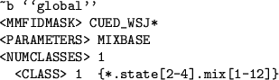
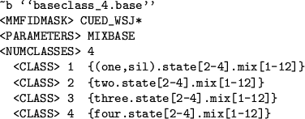

Base Class Definitions
The first requirement to allow adaptation is to specify the set of
the components that share the same transform. This is achieved using a
baseclass. The baseclass definition files uses the same syntax for
defining components as the HHED command. However, for
baseclass definitions the components must always be specified.
Figure 9.1:
Global base class definition
|  |
The simplest form of transform uses a global transformation for all
components. Figure 9.1 shows a global transformation
for a system where there are upto 3 emitting states and upto 12
Gaussian components per state.
Figure 9.2:
Four base classes definition
|  |
These baseclasses may be directly used to determine which components
share a particular transform. However a more general approach
is to use a regression class tree.
Back to HTK site
See front page for HTK Authors